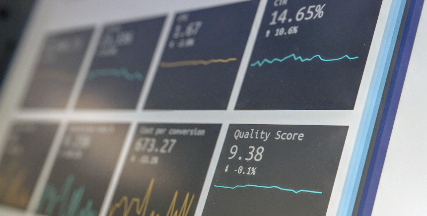
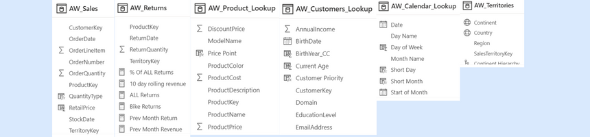
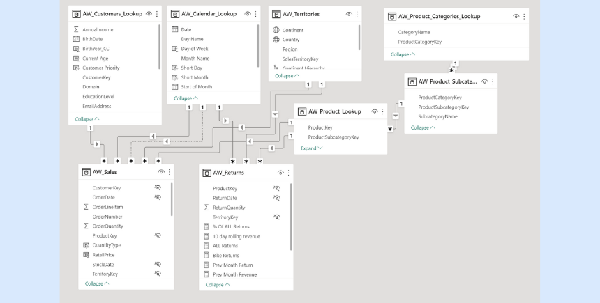

En este proyecto, trabajaré como analista de datos para la compañía ficticia AdventureWorks. Se me ha proporcionado un conjunto de
datos y se me pide diseñar una solución integral de inteligencia empresarial. Para lograrlo, utilizaré principalmente la herramienta de
Power Bi.
¡Empecemos!
Sobre AdventureWorks
AdventureWorks es una empresa de fabricación mundial que se ha dado cuenta de lo importante que es el análisis de datos para la toma de decisiones. La empresa necesita una forma de darle seguimiento a sus KPIs (ventas, ingresos, ganancias, retornos).
Lo único que se me ha proporcionado para crear esta solución integral es un folder con archivos csv sin procesar. Estos archivos contienen información sobre las transacciones, retornos, productos, clientes y territorios.
Acciones tomadas
Definición del business task: Lo primero que se hizo fue examinar el input de los Stakeholders para determinar cuál era el business task.
Estudio de la data: La siguiente acción fue estudiar las propiedades de la data (tipo y características) y su contexto (metadatos y origen). De esta forma se determinó que la data era de calidad y que no tenía bias.
Importación y transformación de datos: Luego de haber estudiado las propiedades de la data, se procedió a importarla y transformarla para asegurar su calidad y prepararla para su posterior análisis. Se utilizó la herramienta de Power Query para este proceso, asegurándose de que los datos estén limpios, completos y estructurados correctamente.
Construcción de un modelo de datos relacional: Una vez que se tenía la data preparada, se construyó un modelo de datos relacional para organizar la información de forma coherente y lógica. Se definieron las tablas y relaciones necesarias para reflejar las entidades y sus interacciones en el mundo real.
Creación de nuevas columnas calculadas y medidas DAX: Después de haber construido el modelo de datos relacional, se procedió a crear nuevas columnas calculadas y medidas DAX para realizar cálculos y análisis avanzados. Se utilizaron las funciones adecuadas para cada caso y se validaron los resultados para asegurar su precisión.
Diseñar un reporte interactivo: Finalmente, se diseñó un reporte interactivo para presentar la información de forma visual y fácilmente comprensible. Se utilizó una herramienta de BI para crear visualizaciones y gráficos que permitieran a los usuarios explorar la data de manera intuitiva y encontrar patrones y tendencias relevantes.
Business task
La finalidad de este proyecto es la siguiente: construir un dashboard interactivo con visualizaciones claras y que faciliten la comprensión de la información para los usuarios.
Este dashboard cumplir con lo siguiente: proporcionar un seguimiento de los KPIs clave de la empresa, comparar el desempeño regional, analizar los niveles de tendencia de los productos, contener proyecciones, e identificar clientes de alto valor.

Sobre la data
Contexto de la data
Quién:
la persona u organización que creó, recolectó y fundo la recolección de datos.
-AdventureWorks, LLC
Qué:
eso en el mundo en lo que la data puede tener un impacto.
-La data puede ayudarnos a analizar nuestra data de ventas para permitirnos tomar mejores decisiones y mejorar el servicio que le brindamos a nuestros usuarios.
Dónde:
el orígen de la data.
-La data fue proporcionada directamente de AdventureWorks en forma de archivos csv.
Cuándo:
momento en el que la data fue creada o recolectada.
-La data es recolectada periodicamente cada mes.
Por qué:
la motivación detrás de la creación y recolección.
-Para darle seguimiento a los KPIs claves de la empresa y ajustar adecuadamente la estrategia de negocios.
Cómo:
el método utilizado para recolectar la data.
-Se recolecta la data cada vez que los clientes hacen transacciones con AdventureWorks.
Propiedades de la data
Debajo en la imagen se pueden observar algunos de los archivos csv proporcionados junto a las propiedades de datos recolectadas:

Modelo de datos relacional
Establecimiento de la relación de primary keys y foreign keys

Metodología de implementación
Identificación de tablas de datos y tablas de búsqueda:
Lo primero fue identificar las tablas de datos (AW_Sales y AW_Returns) cuyo contenido es la información granular de los clientes. Luego se definieron las tablas de búsqueda con información descriptiva de cada uno de los atributos de las tablas de datos.
Reconocimiento de los primary y foreign keys en las tablas:
Se procedió a analizar las tablas de datos y búsqueda para reconocer los primary y foreign keys en cada una de ellas. Se utilizó esta información para establecer las relaciones necesarias entre las tablas y asegurarse de que la data sea coherente y lógica en el modelo de datos relacional.
Establecimiento de las relaciones entre las tablas:
Luego de reconocer los primary y foreign keys en las tablas, se establecieron las relaciones necesarias entre ellas. Se utilizó la herramienta de Power BI para establecer las relaciones entre las tablas y asegurarse de que la data sea coherente y lógica en el modelo de datos relacional.
Columnas calculadas y medidas DAX
Creación de nuevas columnas calculadas y medidas DAX
Metodología de implementación
Después de haber construido el modelo de datos relacional y establecer las relaciones necesarias entre las tablas, se procedió a crear nuevas columnas calculadas y medidas DAX para realizar cálculos y análisis avanzados. Estas nuevas columnas permitieron a los usuarios hacer análisis más profundos y obtener información más detallada de los KPIs de la empresa.
Se utilizaron las funciones adecuadas para cada caso y se validaron los resultados para asegurar su precisión y confiabilidad. La creación de estas nuevas columnas y medidas fue un paso importante para asegurar que los usuarios puedan tomar decisiones informadas y precisas basadas en la data disponible en el modelo de datos relacional.
Dashboard en Power Bi
Diseño de un reporte interactivo Power Bi
Contenido del dashboard
El dashboard cuenta con 3 secciones:
Resumen ejecutivo
Detalles del producto
Detalles del cliente
Después de haber construido el modelo de datos relacional y haber creado nuevas columnas calculadas y medidas DAX, se procedió a diseñar un reporte interactivo en Power BI. Este reporte permitió visualizar la información de una manera más amigable y fácil de entender.
Para el diseño del reporte, se utilizaron las mejores prácticas de visualización de datos y se aseguró que el reporte sea intuitivo y fácil de usar. Se incluyeron gráficos y tablas que mostraban los KPIs más importantes de la empresa.
Además, se aseguró que el reporte sea responsive y pueda ser visualizado en diferentes dispositivos, como computadoras de escritorio, laptops, tablets y smartphones. El reporte interactivo resultante fue una herramienta muy útil para la toma de decisiones y permitió a los usuarios tener acceso a información relevante y actualizada de manera rápida y eficiente.